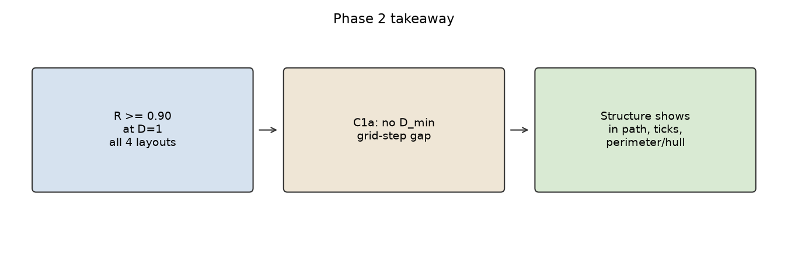
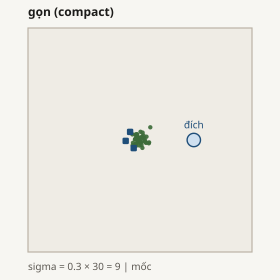
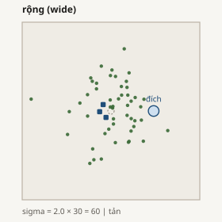
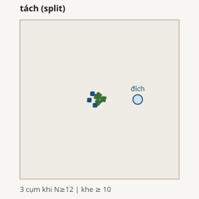
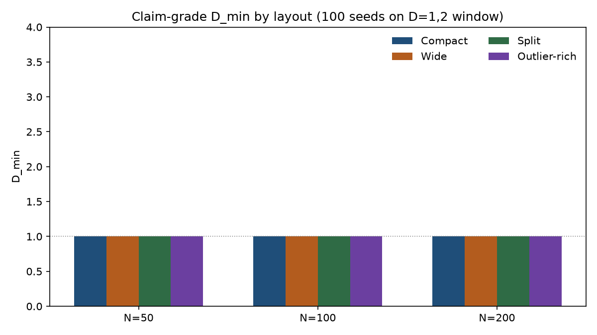
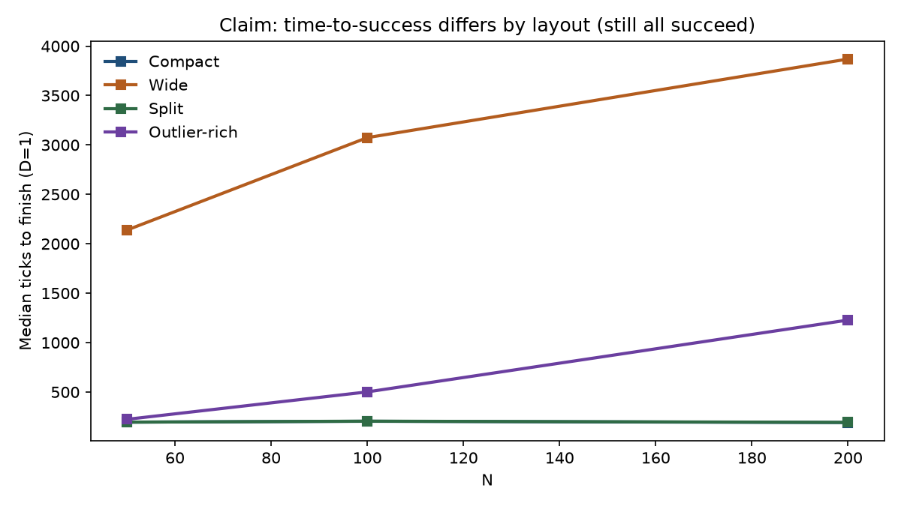
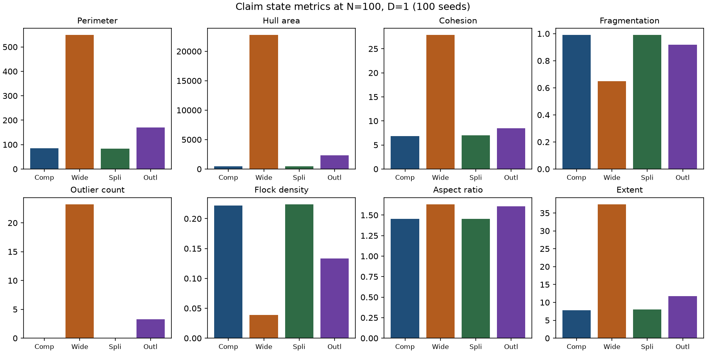

Giai đoạn 2: bản đồ cấu trúc
Đối chiếu cấu trúc khởi đầu trên HerdSim (giao thức scaling_v2): cùng số cừu N, bố cục X0 khác có đổi số chó cần để chăn tin cậy không? Đọc từ trên xuống: tóm tắt -> câu hỏi -> thiết kế -> cách chạy -> kết quả -> ý nghĩa.
TÓM TẮT Nhìn nhanh
| Mục | Giá trị |
|---|---|
| Phương pháp chó | strombom_multi |
| Bố cục X0 | gọn, rộng, tách, nhiều lạc |
| Số cừu N | 50, 100, 200 (khẳng định; khói còn dùng 5, 10, 25) |
| Số chó D | 1, 2, 3, 4, 6, 10, 15, 20, 25, 35 |
| Ngưỡng tin cậy | R ≥ 0,90 |
| Sân / đích | Giống giai đoạn 1: 500×500; đích (370, 250); bán kính 15·√(N/50) |
| Lấy mẫu | Khói 5 hạt; trinh sát 30; khẳng định 100 trên cửa sổ D = 1 và 2 |
| Dữ liệu trích dẫn | Bản gộp khẳng định: 5 280 dòng (24 ô × 100 + 96 ô × 30) |
| Metric đã ghi | cohesion, spread, extent, chu vi (perimeter), hull_area, mật độ, tỷ lệ trục, phân mảnh, lạc đàn, i_dir, coverage (+ parquet timeseries) |

CÂU HỎI Giai đoạn 2 hỏi gì?
Câu hỏi nghiên cứu (cấu trúc / RQ1, gói B): cùng số cừu N, bố cục khởi đầu X0 khác có làm đổi số chó tối thiểu D_min để chăn tin cậy (R ≥ 0,90) không?
- C1a: ít nhất một mức N mà D_min lệch ≥ 1 bước lưới số chó giữa các bố cục.
- C1b: mô hình trạng thái sớm dự đoán thắng/thua tốt hơn chỉ (N, D) (leave-one-N-out).
Giai đoạn 1 đã cho D_min = 1 trên bố cục gọn với các N này. Giai đoạn 2 hỏi bố cục khác có đẩy sàn đó lên không. Chuyển phương pháp là giai đoạn 4.
THIẾT KẾ Những gì bị khóa
| Lựa chọn | Giá trị | Vì sao một dòng |
|---|---|---|
| N khẳng định | 50, 100, 200 | Đủ lớn cho tách/lạc; cùng sàn D_min = 1 trên gọn như giai đoạn 1. |
| Bố cục | 4 họ | Hợp đồng bố cục: gọn là mốc; rộng / tách / lạc là đối chứng. |
| Lưới D | giống giai đoạn 1 | C1a đo bằng cùng bước lưới số chó với bản đồ kích thước. |
| Phương pháp | chỉ strombom_multi | RQ1 baseline; kubo/fat là giai đoạn 4. |
| Hạt giống | 30 rồi 100 | Bản đồ trinh sát đầy đủ, rồi khóa cửa sổ D_min (ở đây D = 1 và 2). |
Chi tiết sigma / khe / tỷ lệ lạc: xem Phụ lục.
THIẾT KẾ Bốn bố cục (hình)





CHẠY Cách đã chạy
- Thử khói: 600 lần, ~7 phút. Đường ống + bốn bộ tạo X0.
- Trinh sát: 3 600 lần, ~3,2 giờ. Bản đồ R đầy đủ.
- Lập cửa sổ: 24 ô biên (D = 1 và 2 cho mọi bố cục × N).
- Gieo lại: 2 400 lần, ~3,0 giờ (đuôi chậm ở rộng N = 200).
- Gộp + gói B: 5 280 dòng; biên và so sánh predictor.
1. Thử khói: 600 lần (~7 phút)
N ∈ {5,10,25,50,100}, D ∈ {1…10}, 5 hạt, đủ bốn bố cục. Xong. Không trích dẫn cho C1a.
2. Trinh sát: 3 600 lần (~3,2 giờ)
Mọi ô trinh sát có R = 1,0 → gợi ý D_min = 1 mọi bố cục.

3–4. Khẳng định: 24 ô × 100 hạt = 2 400 (~3,0 giờ)
Cửa sổ = ứng viên D_min và bước D kế. Với D_min trinh sát = 1 thì đó là D = 1 và 2. R khẳng định tại D = 1 vẫn = 1,0 trên cả 12 cặp (bố cục, N). Bootstrap CI của D_min là [1, 1] mọi nơi.

KẾT QUẢ Kết quả
| Bậc | Số lần | Thời gian | Trích dẫn khoa học? |
|---|---|---|---|
| Thử khói | 600 | ~7 phút | Không |
| Trinh sát | 3 600 | ~3,2 giờ | Không (lập kế hoạch) |
| Khẳng định | 2 400 | ~3,0 giờ | Có (cùng bản gộp) |
| Bản gộp | 5 280 | - | Có |
Số chó tối thiểu theo bố cục (khẳng định / gói B)
| N | gọn | rộng | tách | nhiều lạc | Lệch ≥ 1 bước? |
|---|---|---|---|---|---|
| 50 | 1 | 1 | 1 | 1 | Không |
| 100 | 1 | 1 | 1 | 1 | Không |
| 200 | 1 | 1 | 1 | 1 | Không |

Cùng D_min, khác công sức và thời gian (khẳng định, D = 1)
| N | chỉ số | gọn | tách | nhiều lạc | rộng |
|---|---|---|---|---|---|
| 50 | đường đi | 158 | 158 | 209 | 2 925 |
| 100 | đường đi | 161 | 162 | 554 | 4 320 |
| 200 | đường đi | 144 | 144 | 1 647 | 5 213 |
| 100 | bước (trung bình) | 204 | 205 | 518 | 3 167 |


Rộng tốn đường đi khoảng 25–35 lần gọn ở N = 100, và chậm hơn nhiều, nhưng vẫn thắng trước hết giờ với R = 1. Tách gần như trùng gọn trên bộ điều khiển này.
KẾT QUẢ Metric đã ghi (kể cả chu vi)
Mỗi lần chạy ghi mean / min / max / auc trên trials.csv. Khi bật timeseries, parquet còn lưu chu vi, diện tích bao… theo từng bước. Runner luôn gắn đủ registry metric (các giai đoạn sau cùng đường; một số lệnh giai đoạn 5 chỉ tắt parquet để tiết kiệm đĩa).
Trung bình khẳng định tại N = 100, D = 1 (100 hạt)
| Metric | gọn | tách | nhiều lạc | rộng |
|---|---|---|---|---|
| Chu vi | 86 | 84 | 171 | 549 |
| Diện tích hull | 486 | 458 | 2 304 | 22 765 |
| Cohesion | 6,8 | 7,0 | 8,5 | 27,9 |
| Phân mảnh | 0,99 | 0,99 | 0,92 | 0,65 |
| Số lạc | ~0 | 0 | 3,3 | 23,2 |
| Mật độ đàn | 0,22 | 0,22 | 0,13 | 0,04 |
| Tỷ lệ trục | 1,46 | 1,45 | 1,61 | 1,63 |
| Phủ (coverage) | 1,00 | 1,00 | 0,91 | 0,34 |



DIỄN GIẢI Ý nghĩa
- Câu tin cậy: trên giao thức này, bố cục không buộc phải thêm chó. Một chó đã vượt ngưỡng cho cả bốn kiểu bắt đầu.
- Câu chi phí / độ khó: bố cục vẫn quan trọng. Rộng (và phần nào nhiều lạc) tốn đường đi và thời gian hơn nhiều; trạng thái đàn loãng hơn (chu vi, hull, lạc).
- Tách ≈ gọn ở đây với Strombom trên D_min, đường đi, và hầu hết mean hình dạng: bộ điều khiển có vẻ gom lại cụm mà không cần chó thứ hai.
- So giai đoạn 1: giai đoạn 1 nói D_min gọn phẳng ở 1 khi N ≥ 25. Giai đoạn 2 nói sàn đó không riêng cho gọn trên {50,100,200} với phương pháp này.
KHẲNG ĐỊNH C1a / C1b
| Claim | Luật | Phán quyết trên map này |
|---|---|---|
| C1a | Ít nhất một N có lệch D_min ≥ 1 bước lưới giữa các X0 ở ngưỡng 0,90 | Không được hỗ trợ (mọi D_min = 1; CI bootstrap [1,1]) |
| C1b | Mô hình trạng thái có NLL ngoài mẫu thấp hơn (N, D) | Không đánh giá được (cần cả thắng và thua; mọi ô đều thắng) |
Bác C1a trên D_min không có nghĩa bố cục vô nghĩa: biên số chó không dịch, nhưng công sức và hình dạng vẫn đổi.
GIỚI HẠN Những gì lần chạy này không chứng minh
- Chỉ strombom_multi. Phương pháp khác là giai đoạn 4.
- Chỉ lùa vào đĩa đích trên sân 500. Không phải cổng, NetLogo, hay nông trại thật.
- Chưa chạy N = 300 / 400; tùy chọn sau map này (mọi bố cục đã sàn D_min = 1).
- C1b vẫn không đánh giá được cho đến khi có ô thất bại cho predictor trạng thái.
TIẾP Bước sau
- Giai đoạn 4 (kubo / fat): pattern D_min phẳng + công sức theo bố cục có chuyển phương pháp không?
- Không nâng N chỉ để “săn” lệch D_min trừ khi có giả thuyết mới.
- Metric hình dạng (chu vi, hull…) sẵn cho phân tích cơ chế nếu method khác sau này có quá tải.
PHỤ LỤC Vì sao các giá trị
- N = {50,100,200}: tách dùng 3 cụm khi N ≥ 12; lạc ~20% cần nhiều hơn vài con; D_min gọn đã = 1 từ giai đoạn 1.
- Không lấy N = 5,10 cho khẳng định: chế độ đàn nhỏ và luật tách 2 cụm; khói có thể dùng.
- Sigma gọn = 9, độ lan = 30; sigma rộng = 60: lệch cohesion rõ mà vẫn nằm trong sân.
- Khe tách ≥ 10; bán kính đo = 5: cụm còn tách dưới metric phân mảnh.
- Lạc ~20% ngoài r_a N^(2/3): vành đai, không phải đàn thứ hai (50%) hay một con (5% khi N nhỏ).
PHỤ LỤC Dữ liệu thô
| Đường dẫn | Nội dung |
|---|---|
| scaling/results/phase2/pilot_state/ | Khói 600 |
| scaling/results/phase2/scout/ | Trinh sát 3 600 + timeseries |
| scaling/results/phase2/claim/ | Khẳng định 2 400, gộp 5 280, gói B |
| share_en/assets/claim/packages/b/ | frontier_by_layout.csv, predictor_comparison.csv |
| assets/figures/ | Các PNG dùng ở trên |
make -C scaling scaling-analyse PROTOCOL=phase2_claim PACKAGE=B